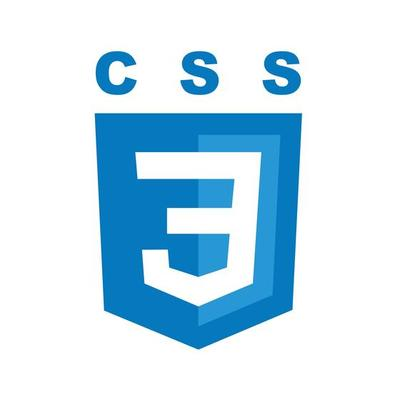

Portfolio Schmoelzlin Eric
A propos
Je m'appelle Schmoelzlin Eric, 29 ans, en réorientation professionnel, étudiant en BTS SIO option
SLAM.
Passionné par le développement web, j'apprécie
particulièrement la partie CSS pour son aspect créatif et visuel.
À l’aise avec les outils comme GitHub et
vscode, je m'oriente vers le métier de développeur front-end.
Actuellement, je suis à la recherche d'une alternance pour
approfondir mes compétences et évoluer dans un environnement professionnel.
Technologie
- HTML

- CSS

- GITHUB

Soft Skills
- Travailler sous pression/gestion du stress
- Créativité/Inovation
- Empathie
- Remise en question

Réalisations
- Technos : HTML,CSS.
- Objectif : Création d'un site web sur la demande du client.
Developpement WEB
- Technos : Vmware.
- Objectif : Faire tourner des VM pour tester des applications ou relever des failles de securité.